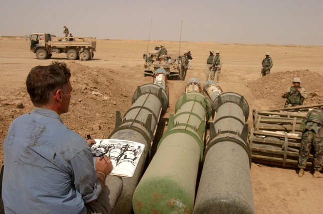

If you start to consider the impact of artists and activists on the perception of war, you begin to become conscious of the image of the unseen industry which fuels it. It is worth looking back to the works of past artists who went to war and into the battlefield to experience and to live through this martyrium. To see how the experience of war has formed the language that artists use to portray the war. In order to understand why the industry wants to stay
hidden and why it chooses to create a different narrative, it is necessary to study the past and investigate how war was communicated to the public by artists.
Otto Dixwas a German painter and printmaker born in Untermhaus in 1891 who is most commonly known for having painted his harrowing experience of the first world war. On the question of why he would volunteer to fight, Dix said:
‘I had to experience how someone beside me suddenly falls over and is dead and the bullet has hit him squarely. I had to experience that quite directly. I wanted it. I’m therefore not a pacifist at all – or am I? Perhaps I was an inquisitive person. I had to see all that myself. I’m such a realist, you know, that I have to see everything with my own eyes in order to confirm that it’s like that. I have to experience all the ghastly, bottomless depths of life for myself’.4
Several of Dix’ paintings were banned and categorized as Degenerate Art (Entartete Kunst) by the Nazis. They were seen as paintings that would weaken the country’s readiness for war and endanger the moral strength of the people. They were deemed useless and said to have no addition to any moral or artistic gain.

The War, by Otto Dix, 4m x 2m, 1929-325
One of his most famous works is his painting Der Krieg (“The War”) in which he declares war against war. He painted this triptych around 1930. The left panel displays soldiers marching into battle. It is foggy and their bags, helmets and weapons are still in good condition. The viewer is not able to see their faces–they remain anonymous to us like many of the fallen soldiers from this notorious war have. In the largest, central panel, death and destruction take center stage. There is no remaining prestige, patriotism or glorification of war here. Dead humans and animals are strewn across a cold, muddy and chaotic battlefield. In the background, buildings are in ruins and only one living soldier remains, huddling for warmth and breathing through a gas mask. A dead body on the upper section of the panel points towards the fallen on the ground. Legs point towards the sky, one hand grasps out towards the emptiness, and every face is completely disfigured. The right side of the panel shows a soldier dragging a wounded soldier out of hell, with dramatic red storm-like clouds hanging in the sky. The living soldiers’ eyes are staring at the viewer, his pupils are large and wide open. In the lower central panel, the last piece of the painting, we see fallen soldiers laying in a dugout–or dead in a tomb.
As previously mentioned, Otto Dix volunteered to be deployed to the war in order to experience and live through its horrors. The painting “The War” portrays the unfathomable experiences and tragedies that he witnessed from the muddy trenches of this terrible war. This same darkness and horror also haunts his prints and drawings.
Contemporary artists have taken the same unusual decision to expose themselves to the battlefield in order to undergo the experience: Steve Mumford for instance is an american artist who voluntarily went six times to Iraq and twice to Afghanistan during wartime. He didn’t enlist as a soldier like Otto Dix, but instead entered these warzones as an artist in order to document and paint the lives of the soldiers and people living in the occupied country. His paintings are rather documentative compared to Otto Dix's violence and fear-filled depictions of the war. I asked Steve Mumford in my interview with him why this might be;
”Dix, I believe, was in the trenches of WWI, the most violent kind of warfare perhaps ever practiced. While I saw occasional combat it was never the sort of prolonged festering-corpse, rat-infested, blood-soaked earth experience. Most shooting doesn’t hit anyone, so a firefight can be terrifying but often bloodless. Alternately, when someone does get hit, they’re often not near you. I made a few images of combat, but mostly my work has shown the spaces in between the bullets.”
The aforementioned painting by Otto Dix displays all of the horror and destruction of manmade conflict. He wasn’t and isn’t the only painter who painted anti-war paintings to portray this world. This is why I also wanted to know how an artist who recently visited a war zone views his position in this kind of situation. The question was if he would see his paintings as documentations, or as anti-war paintings?
“I don’t consider my work to be explicitly anti-war. On the other hand, one could use particular drawings, especially those from the Baghdad ER or the US military hospitals as anti-war messaging or propaganda. But there are other drawings that could probably be used for recruitment posters, in a “soft” kind of way.”6

Steve Mumford drawing in Tikrit, Iraq 7
Besides documenting and living in the war zone, the role of an artist can help people to share and process their memories of war. A news photographer may document the war and every different form of media will portray it differently; a camerateam with reporters will document and interview people, but at the same time the story will be told differently based on the cut, the directors’ choice, the media’s political position or questions... An artist is therefore performing in a much more neutral and free space, making their own decisions, consciously or unconsciously, while they draw. There is no media house influencing the direction of the piece or managing what deadlines they must deliver under. Steve Mumford explained;
“I might spend an hour making a drawing, in which time people come and go. While drawing, I put a narrative spin on the artwork, consciously or unconsciously. I try not to have the drawing reflect the divided politics of a controversial issue, because this feels uninteresting to me; rather, I’m interested in how the people in front of me are feeling and how their emotions and body language influence the scene. I pretty easily empathize with true and heartfelt emotion. It might be coming from a soldier, or from an Iraqi civilian, or an Iraqi soldier… or an insurgent. I want to capture that.”8
The paintings and sketches serve to document history and they may seem neutral. However, each painting still demonstrates an active case of invasion of another country and is therefore documenting a war crime. As pretty or as nice as the drawings may be, an american artist documenting an american war surrounded by american troops is certainly not the way to depict a neutral and objective vision of war. The sketch on the left shows war suspects being treated responsibly with bags covering their heads and made to kneel the ground. But sometimes war crimes like that of Abu Ghraib happen and may happen again in future wars to come. The photos of Abu Ghraib are, like the following painting, a documentation and a representation of the war. However, these documentati an illegal war and the numerous war crimes which ensued. Unfortunately one of the most memorable moments of this war which were forgotten much too soon. The US Army and the CIA commited numerous human rights violations against prisoners including sexual abuse, rape, torture and murder in this prison. Crimes like these tend to remain undocumented and undisclosed, it is only through the occasional leak by activist groups and whistleblowers that the public learns of war crimes like those which took place inside the walls of Abu Ghraib.
Would it have been possible to paint something like the photograph from Abu Ghraib and later have it exhibited in New York? Most certainly not.

Steve Mumford, Suspects in Samarra. Sandbags over prisoners' heads9

Suspects in Abu Ghraib, Sandbags over prisoners’ heads. Would it have been possible to paint something like this?10
Totentanz
Artists like Otto Dix who took a stand against war, an entire movement was created as a response towards war in 1916; the Dada movement which had a huge impact on art in general and can still be seen actively in today's activism against the hidden defence industry.
The Dada movement was born at the Cabaret Voltaire in Zurich. Dada had many faces but was fundamentally a movement against war. In performances, paintings, collages and speeches they expressed to society how mad and chaotic the world had become. Craziness, abstraction and mere stupidity would better serve to reflect what was going wrong with the world. The war in Europe was complete madness and destruction. Dada was contributing to the culture by also challenging it. Famous artists like Hugo Ball, Hans Arp, Tristan Tzara, Hannah Höch and the french-american artist Marcel Duchamp are only a few artists in connection with this movement. The movement would go on to spread from Zurich to many major cities like Paris, Berlin and New York, growing into a global movement against the war.
Cut with the Dada Kitchen Knife through the Last Weimar Beer-Belly Cultural Epoch in Germany, 1919, Collage, 114 x 90 cm11
Hugo Ball performed in a very graphically and linguistically violent piece denouncing the brutality and offensive nature of war at the Cabaret Voltaire in 1916. The poem piece was performed with the melody of “So leben wir”. An old german military folk song from the Prussian army which is originally from the “Dessauer Marsch”. The song was also very well known as a drinking song.
Hugo Ball – Totentanz
That's how we die, that's how we die. We die every day Because it is so easy to die. In the morning still in sleep and dream Already there at noon. In the evening already in the bottom of the grave.
The battle is our house of joy. Our sun is of blood. Death is our sign and our password. We leave woman and child - What do they concern us? If you look at us only Can leave.
This is how we murder, this is how we murder. We kill every day Our comrades in the dance of death. Brother, stand up in front of me Brother, your breast, Brother you must fall and die.
We don't grumble, we don't growl We are silent every day Until the hip bone rotates from the joint. Our bed is hard Dry our bread. Bloody and besmirched the good Lord.
We thank you, will thank you Herr Kaiser, for the grace That you chose us to die. Just sleep, sleep softly and still, Until you are raised. Our poor body that the lawn covers.
The poem Totentanz (en. Death dance) by Hugo Ball.12
Today we can see that Dadas’ philosophy and performativity is a rich source of inspiration for artists who choose to denounce war. The british artist Jill Gibbon has been visiting arms and defence trades from London, Paris and Dubai for over a decade. The arms and defence trade shows are generally a closed society which is inaccessible to the broader public. Therefore she needed to embody a new role and disguise herself to visit such fairs of which she explains;
“Inside, visitors share codes of dress and behaviour. Almost invisible hiding behind fences, security and guarded by the police. For an artist not wearing a suit, formal shoes, and fake pearls. I stroll up and down the aisles gazing at equipment, and leaf through catalogues. The pretence is rewarded with gifts; as I walk around the stalls I am offered small sandwiches, a glass of champagne, a rubber tank. The gifts affirm my membership of the event. Lewis Hyde suggests, ‘gifts tend to be an economy of small groups, of extended families, small villages, close-knit communities, brotherhoods and, of course, of tribes’13 . In return, I find myself nodding and smiling.”14
The gifts she received were published in her essay:This is not a bomb – matériel culture and the arms trade. The images below show what she collected.
Stress Ball in shape of handgranate, Toffy in “WELCOME TO HELL” stencil font, Stress ball in the shape of a tank, “THE ULTIMATE PROTECTION” a condom.15
Jill Gibbon writes about the gifts she received at the fair;
“Saussure argued that signs have shifting meanings. In an arms fair, bombs also have shifting meanings. They are presented as seductive objects, a focus for personal and state power, international cooperation, defence, and jobs. In short, weapons are treated in the arms industry as commodities. The stress ball is made from soft foam plastic, a material with shape-shifting properties resembling the changing meanings of weapons in the arms industry”.16
Another observation made by the artist is the way such products are presented. Arms and defence fairs deal in tools of destruction. Therefore, these fairs are not open to the public and are very well secured. The visual language tends to be targeted towards the male gender since traditionally, most of the world's decision makers–generals, politicians or private company managers–are male. At an arms and defence trade show, one can see such sights as an imposing transformer-like sculpture standing outside the entrance, or perhaps a Lara Croft-esque illustration complete with mane-in-the-wind horses–or maybe yet Viking inspired visuals like those used by the Norwegian company NFM Group which develops different materials and garments for soldiers to wear in battle. Jill Gibbon tells more about her experience and what she saw at the presentation at the DSEI;
“At DSEI weapons are presented as ‘supersensual’ things. Tank shells are displayed on plinths for viewing. Hand grenades are cut open and dramatically lit to show the precision of design and engineering. CS gas canisters are promoted as ‘moral effect grenades.’ A young woman in a short skirt leans against a tank, while businessmen take selfies alongside her. A Brimstone missile is suspended against an image of the London skyline under changing coloured lights. The promotional literature calls it, ‘the most accurate precision strike missile on the market. When you have to hit a target, stay within budget and don’t have time to waste, Brimstone is your answer’ (MBDA, 2017).”
Drawings by Jill Gibbon while visiting the defence fairs.18 19
A photographer who documented their own experience at a defence fair is the german photographer Julian Röder who visited the IDEX (International Defence Exhibition) in the UAE. Through the Agentur Ostkreuz I was able to access a video–which is currently offline–(again)–in which Julian Röder explains:
“Here I found the absolute equivalent of a world where everything you see is only the world of goods/merchandise. Everything only serves the goods and people and individuals have become invisible behind an illusory world of propaganda and clichés.”20
He experienced similar to Jill Gibbon that the goods and merchandise become ‘supersensual’ things.
This illustrates how signs can have shifting meaning; a defence fair can seem like any other fair despite the disagreeable transactions which take place within its walls. At the end of the quarter the numbers need to be right.
With the following images, I aim to compare reality and fantasy as well as how they present themselves in the context of the Defence Fair. How do weapons producers present their work at defence trade fairs and how does it differ from their actual undertakings? It becomes evident that a crucial part is being deliberately hidden from customers.
Transformers, A bold new era, cover by Gabriel Rodríguez21
Twitter post by Jomana Karadsheh Scott. The photo shows a transformer-like sculpture of 10 meter and 1 ton which is called a parabot. Seen at the SOFEX in Jordan.22
Who doesn’t want to take a picture of a cute dog? Even the guy in the back on the right who has to stand on his toes can’t hold himself back. The best and safest equipment for your war dog.23
The image you won’t see at the defence fair. An injured war dog from british troops in Afghanistan. The dog which is named Mali received the PDSA Dickin Medal, a medal which is the animal equivalent for the Victorian Cross.24
Sex sells at a event where most of the clients are male. An armed woman who looks like Lara Croft and a horse.25
Female Peshmergas laying low in Northern Iraq while waiting and observing the enemy. Not a “sex-sells” image and a far more dangerous reality than the Lara Croft Illustration seen at the SOFEX 2012 before.26
Women cleaning an armoured car by the german manufacturer ACS.27
The ongoing militarisation of police forces. Armoured vehicles have been used more and more in recent years towards protesters. This drastic militarisation of police can be seen not just in the United States but also here in Europe.28
Bath in the frozen lake
Ahmed al Safi is an Iraqi artist who met Steve Mumford in Bagdad. Through a video call, I had the chance to talk with Ahmed al Safi who currently lives in France. It was important to me to not just speak to an artist about their time in a war zone, but also to have the chance to have a conversation with an artist who has a relationship and a past in connection to a home country which was–or is–in a war zone. It was of particular importance to me to speak to an artist who lived in such a culturally and historically rich city like Baghdad. How does an artist experience and portray war if it is happening in his own country?
As Ahmed explained to me, it was a very fascinating experience meeting someone from New York who came to Baghdad to paint since the rest of the Americans were soldiers or sometimes reporters but never artists. He was surprised that he would come and document everyday life in a realistic way of painting. “It was interesting to see an artist coming from abroad to Baghdad. Art galleries were dead and the only remains were some museums. These museums were for national or historical art like artefacts,they didn’t include new art”.29 The events which took place in Baghdad and the following repercussions for artists are not uncommon as similar effects have been seen in other wars as well. In the event of a human crisis like war, art is relegated to a very small part of society. Not only exhibitions and galleries are shut down, but art supplies are reduced to the point where they are practically nonexistent due to sanctions.
I was curious about the last war during Saddam Hussein’s reign and wanted to know if any art was restricted or banned as a consequence. For example during the time of the Nazis artists organized the Degenerate art movement (Entartete Kunst) and decades later in Iran several artists had no choice but to meet in the desert or in the odd basement. Ahmed explained to me that during the war there was no such restriction. The status was, so to say, a bit more liberal because there was no real functioning law or government. In general for sculpture, 3d art or paintings, the authorities were not very strict on it as long as it remained abstract and could not be interpreted as a critique of the regime. What might have been more risky would have been a publication from a writer he told me; Writing is seen as a more personal and direct form of communication and this is why it could have been more problematic.
When I asked him if he would see his art as anti war or post war he told me that of course his feelings were against war. “My art is against war, against violence, against authority. But at that point of the war it seemed like the war could be a solution, a solution to peace. Saddam looked like Hitler to me”. But showing his work to others and the public felt to him “like a bath in a frozen lake” he explained. He had so many sketches and drawings but was not sure if he wanted to share them as they were or turn them into paintings. A painting of his which could be categorized as an anti war painting would be his painting of the Red Dragon.
Red Dragon, 50 x 40 cm. Oil on canvas30
As he showed me this painting he explained to me that in 1991 he and his family fled from the war into villages, away from the city and it was so quiet.“The last war, we didn’t leave, we stayed home”31. He remembered the farmers and children in the villages. Seeing animals like rabbits or large palm trees. Everything seemed so quiet, most people still didn’t have a TV and everything was more simple and easier. But with the war, the silence and quietness disappeared. The red dragon symbolises the american helicopters and planes that were constantly bombing and causing explosions and as a result destroying the peace. The quietness disappeared.
Crazy horse one eight
War artists are an important part of the documentation of war for historical matters. As shown before with Steve Mumford, artists who follow this profession still exist to this day. In some cases, those artists are directly hired by the military. Expecting a neutral perspective of the war is not realistic in such a case. Historically, war paintings were often more focused on portraits of army generals like Napoleon, or were focused on great victories in battle. In the painting Crossing the Alps by Jacques-Louis David Napoleon is valiantly sitting on a horse and pointing towards the battle. While in the past, war paintings were rather political or personal propaganda, in the wars of the 20th century e.g. in World War I or II, more and more artists began to paint their surroundings and the soldiers which occupied them. Artists were now on the front lines and their lives in the trenches and surrounding landscapes became the focus of their art, certainly influenced by the phenomenon of war photography.
As well as artists, authors also wrote about and documented the war, like the german veteran and writer Erich Maria Remarque. His novel All Quiet on the Western Front (German: Im Westen nichts Neues), a novel based on stories and experiences from soldiers, became his most successful novel. In 1930 the book was made into a film by Lewis Milestone which was remade again in 1979 by Delbert Mann. Remarque was asked in an interview by Friedrich Luft in 1962 if he saw himself as anti-war or as a pacifist. To which he replied;
“..There are no particular reasons for being a pacifist or against the war, I thought it was completely natural and obvious that humans would be against it. I always thought everyone would be against the war until I found out that there are those who are for it, especially those who don’t have to go in..”31
As mentioned before, there were only a few ways of documenting the war in the past, but today the possibilities seem endless. The aforementioned media are still in use but the age of digitalisation has brought on a lot of changes in the field. Technology plays a big role in documenting the war today: soldiers can document the conflict from their own perspective with a GoPro camera strapped to their head or chest. Everyone has their own smartphone with camera and news reporters can follow them with small equipment for documentaries.

Bedraou Valley, Kapisa Province, Eastern Afghanistan. 5th March of 2010, the French 13th Chasseurs Alpins battalion (13e BCA) of the 27th Mountain Infantry Brigade, 2010. Documented with a GoPro.32
Paul Nash, Spring in the trenches, Ridge Wood, oil, 609 mm x 508 mm, 1917.33
On the first image we can see french soldiers in Afghanistan during a battle with talibans in the Kapisa Province. On the right, a painting by Paul Nash of the first world war. Both depict soldiers who are taking cover but also resting at the same time. Both images come from different circumstances and different times, yet they show us the soldiers’ will to survive. The documentation of war hasn’t changed as much historically as it has over the last dozen years; a small camera allows outsiders access to what takes place on the frontlines.
This new access to technology has also led to the uncovering of war crimes which may have otherwise gone unnoticed in the past. This footage is often kept safe and secretive by the government. Every now and then there is a leak in which people get to see different war crimes which took place in past wars. This is the case for “Collateral Murder” which was published by Wikileaks in 2010. The report documents the killing of twelve to eighteen civilians including two Reuters journalists and two children who were heavily wounded.
After the first attack on the target, civilians are seen rushing to retrieve the dead and wounded and bring them to safety. Despite the clear picture from the drone’s camera of the grief and panic taking place below below, the soldiers conducting the attack request permission for a second wave of attacks which is immediately granted.
Screenshot of the video which was published by Wikileaks.34
Screenshot of the video which was published by Wikileaks.35
Businessman using a helicopter simulator at the Eurosatory in Paris.36
Drone Shadow by James Bridle.37
Drone Survival Guide by Ruben Pater.38
Most people are used to seeing drones as a harmless geeky hobby, but the general population has never seen the sheer scale of a war drone. With tape, chalk or paint, James Bridle attempts to bridge this gap by demonstrating the real size of such a drone in public spaces in order to make people aware of their imposing scale.
The Drone Survival Guide by Ruben Pater catalogues which drones are used by different countries and whether they are used for surveillance or for deadly force. The guide includes an introduction on how to recognise these drones and how to hide from them. Additionally, the guide has been printed onto metallic coated paper which can be used to make oneself invisible to any overhead drones.
The attacks on peaceful civilians and not soldiers or terrorists used to be conducted by the Boeing AH-64 Apache helicopter. In recent years, this role has been filled by war drones. Drones like these are exhibited at the defence fairs as a tool of technological advantage and as a means to defend yourself thousands of kilometers away from your enemy. This is not a tool of defence but a tool of mass murder and destruction. Drones like the Predator have been used abroad in war zones rather than to defend home. Have you ever seen a Predator drone fly over your home and destroy surrounding cars or buildings?
The U.S soldier Ethan McCord, an eyewitness of this terrible event explained that this was not a rare incident and events like these would happen regularly throughout his service in the military. Such valuable leaked information should be addressed and discussed on a broad public scale rather than be buried out of sight and penalized. Still, the activist Julian Assange is in prison because of his publications of such documents. Nevertheless, the selling of destructive tools and the money stream flowing into the pockets of the defence industry stays unaffected by this. These industries are safely protected and will not be defied due to their wealth and their members’ roles in high-standing governmental positions.
Serial number of language
How to sell destruction over life?
According to the SIPRI (Stockholm International Peace Research Institute) the United States, Russia, France, Germany and China accounted for 75% of all arms exports.39 Arms sales of the world’s 100 largest arms-producing and military services companies (the SIPRI Top 100) totalled $398.2 billion in 2017.40 It is very easy to understand why this multi-billion industry will be doing everything in its power to keep this market running and expanding.
Raytheon screenshot. One of the leading U.S military contractors.41
Lockheed Martin screenshot. Both show that in the past ten years their stock values have massively increased. From a stock price of 50$ up to 220$ before corona and Lockheed Martin from around 70$ up to almost 400$.42
This serves as a reason as to why this unusual marketing language has come to be used by this industry. After all, how do you make war attractive and how do you convince someone to buy equipment to kill? As explained in the previous pages, the language and visuals of actual war are completely inhumane and no sane person would have the idea to support anything like that.Unfortunately, the defence industry is an industry which spends a lot of money in developing and marketing a clean image of war by addressing the need to defend rather than to kill. The appearance of war supplemented through marketing is a completely different reality than actual war. Can you mention “killing” or should you imply it through other means? There are many ways this industry is presenting a carefully constructed façade as explained in the following interviews and texts. When I asked the artist Jill Gibbon how she experiences the way products are displayed and presented at defence fairs, she replied;
“There is a strong emphasis on technology and progress. A catalogue for the Paveway bomb says it has ‘revolutionised tactical air-to-ground warfare, converting ‘dumb’ bombs into precision-guided munitions’. (This bomb has been used in airstrikes on Yemen) Raytheon promises ‘Technologies that see further, process data faster and precisely guide interceptors to targets’. The missile manufacturer MBDA claims it is ‘turning innovation into reality’ and ‘mastering technology’. There are occasional oblique references to killing. The Rafael stand has slogans like ‘lethality’. But, here killing is used as an advertising phrase. There are videos showing the spectacle of explosions, with no sign of what happens afterwards. There are no images of the dead or wounded.”43
The language in the defence industry is carefully crafted to its customer base. The fairs present themselves as a helping hand. They promote self defence and self protection. Swords and shields are commonly used to decorate different stands, both of which symbolise protection, aggression but also manhood–something which appeals to an audience which predominantly consists of company representatives or male generals. It is a very male oriented business. Missiles are presented as desirable sexual objects, erect and glistening. Many stands have young women in short skirts and low blouses.44 Generals and defence ministers from all over the world come to these fairs to spend tax money on the newest technologies in order to be better protected than others. Political enemies or divergences at these fairs completely vanish. Everyone simply wants to do business with one other and therefore it doesn’t matter whether you are rivals anymore. It’s the place where Pakistan and India meet, Israel and Arab countries shake hands, Chinese generals and American manufacturers sit together and drink tea.
The naming of fairs like these can be even more questionable and confusing. The IDEAS Pakistan Arms For Peace is a trading convention in Pakistan. IDEAS stands for International Defence Exhibition And Seminar. Selling this as a neutral exhibition by including “arms” and “peace” in their title is undoubtedly quite controversial. Especially when the tagline “Arms For Peace” comes from a country which is known for its constant provocation and aggression towards India. Below is a list of some of the many defence conventions from around the world.
INSERT GRAPH OF FAIRS HERE
Not one of them dares to speak the truth: “Maxikill or Destroyhibition – How to exterminate unwanted civilians and enemies at low risk”. At the shows themselves, the products are always labeled as “defend” and “protect”. Sellers do not mention the act of killing: the only words which even hint to it would for example be “to eliminate the target” or simply “to save lives”. Using the word “killing” is practically off-limits. Your aim as a seller is to avoid any suggestion of your customers as a killer–you absolutely want to avoid associating them with anything negative. Rather, you want to hand them a tool which can give them protection against any unwanted attacks. Since the customer is always right, they are always the good guy in the scenario who only needs to defend themselves against a predatory force. You are simply providing your client with the necessary tools in the possible chance of an invasion, something to only use as a final resort.
Better to have your child inside of the tank instead in front.45

The fourteen year old boy Faris Odeah. The small boy was shot dead by Israel Defense Forces while throwing rocks at tanks in 2000. This happened during conflicts between the Israelis and Palastinien at the Karni crossing in the Gaza Strip.46
The defence industry communicates in a language that is only beneficial and essential to your needs. Words like defence, protection or national security suggest that you are the one in a vulnerable position. The one who has to fear the opponent and therefore needs to prepare in order to be ready for the worst case scenario. A lot of time and money is invested in framing products for these companies. Think tanks research and analyse the best strategies to make customers comfortable and feel at ease buying their products.Alternatively, what is an even better way to sell weapons than to deny or conceal the unpleasant aspects of the trade? Another method is to simply avoid them. The Belgium engineering company John Cockerill for example strongly promotes its service and engineering technology on their website through the lens of renewable energies. Their annual report video shows someone painting on a canvas, a man running through the forest, a wolf running or even a woman dancing. Between these somewhat obnoxiously forced poetic and aspirational visuals the viewer sees the occasional elements of water or wind turbines in the sea. There is no mention of the company’s five tank product line. The fact that they even sell tanks is completely swept under the rug.
Screenshots from the annual report video by John Cockerill. The whole video of one minute duration does not show a single time a tank.47
Boost your wallet
In such a dangerous industry, one might assume that it would be difficult for these products to end up in the wrong hands. However, there are many cases in which this has happened and due flaws in security it will most likely happen again. The most important element to keep in mind is that profit counts and therefore, in the art of selling war,Cash is King.
In 2018, Wikileaks was able to release secret documents from the International Chamber of Commerce (ICC). These secret documents revealed the following:
A $3.6 billion arms deal took place between French state-owned company GIAT Industries SA (now Nexter Systems) and the United Arab Emirates (UAE). The agreement was for the sale of 388 Leclerc combat tanks, 46 armoured vehicles, 2 training tanks, spare parts and ammunition. It was signed in 1993 and scheduled to be completed in 2008.48
This was a very interesting case since the French Leclerc combat tanks were equipped with German engines.This created a problem because it would violate German law in which Germans arms or military sale to the Middle East were not allowed. By lobbying high ranked German and French officials, Al Yousef was able to bypass this law.
A similar phenomenon took place during the war in Libya against Gaddafi. Jill Gibbon wrote in her article; Gifts from arms Fairs, published the 4th May in 2020 she wrote;
In the 2011 Libyan conflict, the UK, France, Colonel Gaddafi, and the Libyan rebels were all using missiles manufactured by the European multinational MBDA. Tony Blair helped to broker a deal between MBDA and Gaddafi in 2007.49
By bribing and manipulating the right people for the right price in the defence industry everything becomes possible. It may present itself as a clean and proper industry–aseptic perhaps–but in the end, it is all about dollar bills made on blood, death and unimaginable violence. The place where deals are made and the place where deaths are counted are separated by thousands of miles.
The arms industry is corrupt and secretive, and there is much that I haven't seen. I would love to get access to lobbying meetings with governments, where arms companies persuade politicians to take part in unnecessary wars as a boost for jobs.50
Our projectiles go through
RUAG is a company based in Switzerland specialised in aerospace engineering and in the defence industry. They are the main partner for the swiss military in supplying arms and ammunition. Besides their partnership with the swiss army, they have been exporting ammunition to other countries abroad. Of course it is very doubtful and questionable to export weapons and tools designed to kill to countries which may in turn kill people in the future, but in this case I want to show another side of the language which is used in the defence industry–to be precise I will study how RUAG promotes their ammunition in their catalogs.
Inside these catalogs, RUAG presents a variety of different graphs and 3d renders displaying their ammunition range. These are full of information about size, accuracy, weight and any other relevant details. The title “Our projectiles go through” is a direct quote from one of these catalogs. Some of the bullets have the certificate SINTOX and LEAD FREE. SINTOX stands for non-toxic, corrosion and erosion free, high storage life, high reliability and NATO-qualified standards. This means they contain zinc and titanium which is harmless to the environment. Conventional cartridges often contain lead, barium, antimony and strontium which are toxic chemicals.The LEAD FREE certifications stand for low-pollutant ammunition. As RUAG says; “ Lead free ammunition relies on primers free of heavy metals, optimally laid out propellants and bullets completely without lead. Thanks to this it is possible to reduce the pollution with harmful substances to a minimum for both shooters and the environment”.
The question remains; Has the process of greenwashing infiltrated the business of war? Could we live to one day see ammunition with a green leaf logo next to it? Perhaps tomorrow a tank with the logo “Recycled 50% steel from the former tanks in the Iraq war” or “Organic and earth friendly boots for the soldiers made out of vegan/faux leather?” Doesn’t the perception of war seem softened by the practice of using environmentally friendly products?
It’s true that they don’t use any of the toxic materials as mentioned above and that they are LEAD FREE. This might be useful for people in the training and would actually be of benefit to the environment. But advertising a product as being greener than others which are designed to kill puts this practice in a very questionable light.
The defence industry publicizes itself as an industry which only develops equipment, material etc. for your safety. But these tools are designed to kill. And again we are presented with yet another linguistic strategy in which these weapons are presented in terms of their positive impacts, in this case using eco-friendliness as a new selling point. We see that the company reads and understands the market of environmental trends and even adapts it to tools like ammunition which are designed to kill. The target which is destroyed or killed couldn’t care less whether it is killed in an environmentally friendly way or not. Like in everyday products, the green washing aspect is only to stroke the client’s ego and foster their peace of mind towards their impact on the planet. One's ego is after all affected by the feeling that they are doing something good. Now I can protect myself without any harm to the environment. Who doesn’t want that?
Environmentally friendly coming to you51
Different colored dots symbolise different manufacturers from all kinds of countries. Dots stand for bulles which hit the building. Walid Raad.52
Bullets and bombs are very specialised products which are engineered down to the most minute detail. Every bullet or bomb has a serial number which provides information about its production, type, date and its country of manufacture.Thanks to this they can all be traced back to their country of origin. Many times, human rights violations were brought to light thanks to this information.

Ammunition present as jewelry at a defence fair. 53
Trade Beads by Constantine Zlatev. “In this work he places antique Venetian Murano glass beads in ammunition belts, creating sculptures evoking the forms of modern arms and munitions.” - Up in Arms54
Raytheon bomb which was dropped in Yemen on the 20th september 2016. The explosion of the bomb led to the death of fifteen women and children in a bus55
One of Raytheon projectiles with the copy: “We call it the Excalibur projectile. Our customers call it true precision.56
These weapons carry this information because they can degrade over time. Plus, it is helpful for buyers to be able to track them when they test or order new ones. In recent years the practice of using secretive barcodes has also become a common means of marking ammunition: the metadata only becomes readable with the proper designated software. This makes it of course much more difficult to uncover potential war crimes. Walid Raad, a lebanese artist, used exactly these product details and connected them with his memories through his art. He talks about how during the war in Beirut in the ‘70s and ‘80s he would collect bullets which were lodged in the walls or lying on the ground. Twenty years later he noticed that every bullet was marked with different colors and numbers. What started as a childhood wartime hobby eventually became a fascinating and revealing collection of data.
“I realized that I had in front of me in my collection an index of all the countries that had manufactured and sold weapons to the Lebanese militias in the past 30 years”.57
The work is titled; Let's be honest, the weather helped. The impact of a bullet is perhaps just as unpredictable as the weather.
Yellow dots covering the spots where bullets hit the building. 58
Dada Poem of Serial Numbers
Dada portrayed the war in an abstract and radical manner. Hugo Ball presented in his performance and poem Karawane a series of nonsensical words. Inspired by this poem, I created the poem Serial Numbers as the final chapter to my thesis. Serial numbers on bombs reveal information about the manufacturer, model, country and date of expiration. Their format consists of lists of mysterious codes made up of capital letters and numbers. To the untrained eye these codes may seem abstract. This poem might seem nonsensical at first, but hides important information in its subtext.
NG ASSEMBLY
14ASSY872128-1 E315
01-041-5890
15-005326
10/15
CBU-58A/B
DISPENSER AND BOMB AIRCRAFT:
COMP B 163 LBS
NSN: 1325 01 038 4733-E803
DRAWING NO: 763571-30
LOT NO: MA-78J270-046 SERIAL NO: BB-117628
LOADING ACTIVITY: MAAP
FOR USE ON MK82
FIN. GUIDED BOMB
04271ASSY147214
FOR USE ON MK82
FIN. GUIDED BOMB
96214ASSY837760
FOR USE ON MK82
ASSEMBLY
872128
25-01-041-5890
NO. 14-003691
96214ASSY837760
NSN.1325-01-041
SERIAL NO. 16-004709
CBU-58A/B
COMP B 163 LBS
NSN: 1325 01 038 4733-E803
DRAWING NO: 763571-30
LOT NO: MA-78H270-045 SERIAL NO: BB-117064
LOADING ACTIVITY: MAAP
DISPENSER AND BOMB. AIRCRAFT:
NSN: 1325 00 477 2053-E800
AF DRAWING NO: 716514-10
CYCLOTOL: 133 LBS:
LOT NO: MA-77G246-002 SERIAL NO: EE-97391
Conclusion
Artists and activists have been documenting ongoing human right violations and war crimes for decades, taking the painstaking effort to document and represent the senseless destruction of human-on-human violence. Common sense tends to position itself against inflicting any kind of violence or harm towards others. Documentation and memories from past generations regarding the suffering and consequences related to war reminds us why it should be a phenomenon of the past.
The defence industry is cleverly portraying itself in a way that subverts killing and destruction and presents their products with refined aesthetics and comforting language instead. They understand that the industry works in a grey area and that it attracts criticism from all sides including from artists and activists. Thanks to this understanding, the defence industry has acquired the necessary knowledge of how to cover up their actions and present themselves in the cleanest way possible by isolating themselves and creating their own perfect echo chamber. The industry spends a lot of time and effort on presentation and marketing in order to promote the fantasy of a pure image of warfare
With my thesis I was able to clarify and differentiate the harsh realities of war from the eccentric world in which defence products are sold. Through several interviews with artists who have been to war zones and activists who have been to defence fairs I was able to identify the weapons industry’s target audience and investigate the ways through which they promote their products. The gap between how war is documented by artists and how it is marketed to clients today proves that the industry is well aware of its negative image in the public eye. The effect is detrimental to many, but it is an extremely profitable market for those who play a role in it. The defence industry has perfected the modern art of selling war.
Bibliography